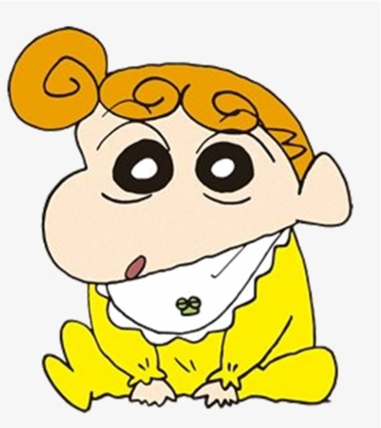

|
|
|
Shinnosuke Nohara (Shinchan)
The mischievous 5-year-old protagonist known for his hilarious antics and love of choco chips. |
Misae Nohara (Mom)
Shinchan's short-tempered but loving mother, always trying to keep him in line. |
Hiroshi Nohara (Dad)
The laid-back father who works at a company and enjoys his evening beer. |
Himawari Nohara (Sister)Shinchan's baby sister who often shows surprising intelligence. |
Yukino Nohara (Shiro)
The family dog — small, fluffy, and sometimes the most sensible member of the household. |
Toru Kazama
The smart and responsible friend of Shinchan, often the voice of reason in the group. |
© 2025 The Nohara Family. All rights reserved.
Website Design: Programming Exercise by Nanjing Institute of Technology